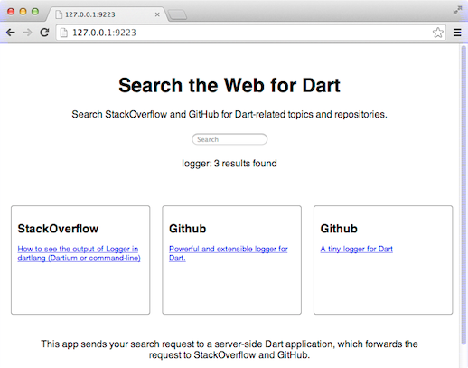
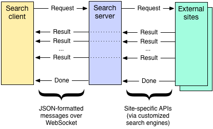

Walkthrough: Dartiverse Search
This chapter points out some of the useful and fun features of the Dart language and libraries that are used in Dartiverse Search, a client-server app.
Note: This page uses the Future or Stream API when it could instead use Dart’s new async and await keywords. For more information, see Asynchrony support in the language tour.
As the screenshot shows, Dartiverse Search looks for a user-entered string in GitHub and StackOverflow. The app is asynchronous, adding results as they’re found, so the UI is always responsive.

How to run Dartiverse Search
You can use Dart Editor to get and run Dartiverse Search.
-
In Dart Editor, go to the Welcome page. (If you don’t see it, choose Tools > Welcome Page.)
-
In the demo section, click Dartiverse Search to create a copy of the dartiverse_search package.
-
Use Tools > Pub Build to build the package.
-
Select
bin/server.dartand click the Run button. You should see a message that the search server is running at http://127.0.0.1:9223/. -
Enter that URL into any modern browser. The search client UI should appear.
How Dartiverse Search works
The search server is an HTTP server that provides a WebSocket interface. The search client uses that WebSocket interface as a bi-directional communication channel with the server. The client sends search requests to the server over the WebSocket, and the server replies with any results and then a final, “search done” message.
The server starts things off by binding to localhost, port 9223, and
listening for requests to the WebSocket: ws://127.0.0.1:9223/ws.
Search clients can connect using that URL.
The real communication between client and server happens when the user enters a search string. As the following diagram shows, the client sends a JSON-encoded search request to the server. The server extracts the search string from the request and sends it to a series of search engines. Each search engine searches a specific site—for example, GitHub—using whatever API that site supports. Whenever a search engine finds a result, the server forwards that result to the client, again using a JSON-encoded message.

The search server implements an HTTP server that both provides content for the client UI and listens for WebSocket requests.
The client code is split between HTML (page structure), CSS (page look), and JavaScript (logic and behavior). That’s typical of web clients.
The twist is that this client’s JavaScript code is produced from Dart code, thanks to the dart2js compiler. Any modern browser can run this JavaScript code.
The client’s HTML code
The client’s UI is simple. It has a search field, implemented as an <input> element named “q”. It displays output in two <div>s named “status” and “results”.
<!-- In web/index.html: --> <input type="search" placeholder="Search" value="" id="q" disabled /> <div id="status"></div> ... <div id="results"></div>
A couple of <script> tags tell the browser to execute the client’s Dart or JavaScript code:
<script type="application/dart" src="client.dart"></script> <script src="packages/browser/dart.js"></script>
The first line works in browsers that have an embedded Dart VM and so can execute Dart code; currently, only Dartium qualifies.
The second line is important for every other browser. It executes dart.js, which is a standard script that converts all Dart <script> tags to use foo.dart.js instead of foo.dart, with the assumption that foo.dart.js is a JavaScript version of foo.dart. For non-Dartium browsers, dart.js changes the first <script> tag to the following:
<script src="client.dart.js"></script>
You can get dart.js with the browser package from pub. See the dart2js documentation for more information about compiling Dart code into its JavaScript equivalent.
The client’s Dart code
Dart code (web/client.dart) provides the client’s logic, using the DOM
to interact with UI elements. For example, the client’s Dart code uses
the DOM to find the div where the client displays messages.
Finding DOM elements
The client app uses dart:html’s top-level querySelector() function to
get the client’s UI elements from the DOM:
SearchInputElement searchElement = querySelector('#q');
DivElement statusElement = querySelector('#status');
DivElement resultsElement = querySelector('#results');
The querySelector() method uses a selector string that identifies an
element in the DOM. See
Finding elements for more about selectors.
Handling events
The client app uses onChange.listen() to register a handler that
reacts to user input. Whenever the user presses Enter, the search field
fires a change event, and the handler kicks off a search.
searchElement.onChange.listen((e) {
// ...Start the search...
});
Getting and setting properties
The change event handler gets and sets the text in the search field
using the value property.
search(searchElement.value); searchElement.value = '';
Adding DOM elements
Every time the search client receives a result on the WebSocket, the
client creates a new div (result) to display it. The client then adds
that new div to the “results” div (resultsElement).
void addResult(String source, String title, String link) {
var result = new DivElement();
result.children.add(new HeadingElement.h2()..innerHtml = source);
result.children.add(
new AnchorElement(href: link)
..innerHtml = title
..target = '_blank');
result.classes.add('result');
resultsElement.children.add(result);
}
This code uses method cascades to avoid creating variables to temporarily hold the new HeadingElement and AnchorElement.
Encoding and decoding messages
The dart:convert library’s global JSON object lets you encode and
decode JSON-formatted messages. JSON is an easy way to provide string
message data to WebSockets. Using JSON also gives a bit of structure to
the messages and leaves the door open to creating more detailed messages
in the future.
The JSON.encode() method converts a Dart object to a JSON-encoded
string, and the JSON.decode() method converts a JSON string back into
a Dart object.
Here’s the code that creates a JSON-encoded search request:
var request = {
'request': 'search',
'input': input
};
webSocket.send(JSON.encode(request));
Here’s how the client decodes and processes a JSON response from the server:
var json = JSON.decode(data);
var response = json['response'];
switch (response) {
case 'searchResult':
addResult(json['source'], json['title'], json['link']);
break;
// ...
}
For more information, read about dart:convert.
Communicating with WebSockets
The search client connects to the WebSocket by calling the WebSocket constructor with the argument ‘ws://127.0.0.1:9223/ws’. Then it adds event handlers for open and error events. The open event handler, in turn, registers handlers for message and close events. Here’s the relevant code:
class Client {
// ...
WebSocket webSocket;
// ...
Client() {
// ...
connect();
}
void connect() {
// ...
webSocket = new WebSocket('ws://${Uri.base.host}:${Uri.base.port}/ws');
webSocket.onOpen.first.then((_) {
onConnected();
webSocket.onClose.first.then((_) {
print("Connection disconnected to ${webSocket.url}");
onDisconnected();
});
webSocket.onError.first.then((_) {/*...*/});
}
void onConnected() {
// ...
webSocket.onMessage.listen((e) {
handleMessage(e.data);
});
}
// ...
}
To send a message on the WebSocket connection, the client invokes
WebSocket’s send() method:
webSocket.send(JSON.encode(request));
When the client receives a message, it decodes the JSON data (as you saw before) and updates the UI to match:
void handleMessage(data) {
var json = JSON.decode(data);
var response = json['response'];
switch (response) {
case 'searchResult':
addResult(json['source'], json['title'], json['link']);
break;
case 'searchDone':
setStatus(resultsElement.children.isEmpty
? "$mostRecentSearch: No results found"
: "$mostRecentSearch: ${resultsElement.children.length} results found");
break;
default:
print("Invalid response: '$response'");
}
}
The server’s code
The main code for the search server is under the bin directory, in a
file named server.dart. It’s responsible for serving static files,
managing WebSocket connections, and starting searches.
The code for performing the searches is in a custom library, called
search_engine, that’s implemented in files under the lib directory.
Serving static files
The search server uses HttpServer (from dart:io), Platform (also from dart:io), and VirtualDirectory (from the http_server package) to implement a basic web server. Here’s the code that initializes the web server and serves static files:
var buildPath = Platform.script.resolve('../build').toFilePath();
// ...
int port = 9223;
HttpServer.bind(InternetAddress.LOOPBACK_IP_V4, port).then((server) {
// ...
var router = new Router(server);
// ...
var virDir = new http_server.VirtualDirectory(buildPath);
virDir.jailRoot = false;
virDir.allowDirectoryListing = true;
virDir.directoryHandler = (dir, request) {
var indexUri = new Uri.file(dir.path).resolve('index.html');
virDir.serveFile(new File(indexUri.toFilePath()), request);
};
// ...
virDir.serve(router.defaultStream);
// ...
});
The call to HttpServer.bind() creates a web server that handles HTTP
requests to the address 127.0.0.1:9223 (also known as localhost:9223).
Once the future returned by bind() completes, the code creates a
Router (more about that later) and a VirtualDirectory (virDir).
Because packages used by the client are set up using symbolic links
pointing outside the root directory, ../build, the jailRoot property
of virDir must be false. (By default, symbolic links aren’t allowed
outside the root directory.) The next line sets allowDirectoryListing
to true, allowing the web server to respond to paths that don’t include
a filename. Next, a custom directory handler overrides the default
directory listing code, so that directories display index.html instead
of a list of files.
Once the VirtualDirectory is all set up, invoking the serve() method
connects virDir to a stream of HTTP requests. This stream consists of
every HTTP request that the router doesn’t handle specially—for example,
the stream doesn’t include WebSocket connection requests.
Managing WebSocket connections
The search server uses the Router class from the route package to serve dynamic content. In this app, the main purpose of the router is to filter out upgrade HTTP requests for /ws and to handle them as WebSocket connections. The code uses dart:io’s WebSocketTransformer class to perform the conversion:
router.serve('/ws')
.transform(new WebSocketTransformer())
.listen(handleWebSocket);
Here’s the custom handleWebSocket() method, which handles events on
the WebSocket:
void handleWebSocket(WebSocket webSocket) {
webSocket
.map((string) => JSON.decode(string))
.listen((json) {
var request = json['request'];
switch (request) {
case 'search':
// ...Kick off searches, and register handlers for results...
break;
// ...
}
}, onError: (error) {/*...*/});
}
The call to webSocket.map() parses all the messages that the client
sends over the WebSocket, converting each JSON-formatted message into an
object. Then, after checking the message format, the handler initiates
searches on GitHub and StackOverflow.
Here’s the code from the ‘search’ case that starts the searches and handles results as they come in:
for (var engine in searchEngines) {
engine.search(input)
.listen((result) {
var response = {
'response': 'searchResult',
'source': engine.name,
'title': result.title,
'link': result.link
};
webSocket.add(JSON.encode(response));
}, onError: (error) {
// ...
}, onDone: () {
done++;
if (done == searchEngines.length) {
webSocket.add(JSON.encode({ 'response': 'searchDone' }));
}
});
Each engine can return up to 3 results, but the WebSocket handler
doesn’t wait around for those results. Instead, a listener handles each
result as it arrives, constructing a JSON-formatted message and using
webSocket.add() to forward the result to the client. Once both engines
have finished sending any results, the search server sends a
‘searchDone’ message to the client.
Using web APIs
The GitHub and StackOverflow searches are implemented in search()
methods that take an input string and return a stream of SearchResult
objects. Here’s an example from the GitHub search() method:
import 'package:http/http.dart' as http_client;
// ...
Stream<SearchResult> search(String input) {
var query = {
'q': 'language:dart $input'
};
var searchUri = new Uri.https(
'api.github.com',
'/search/repositories',
query);
var controller = new StreamController();
http_client.get(searchUri)
.then((http_client.Response response) {
if (response.statusCode != HttpStatus.OK) {
throw "Bad status code: ${response.statusCode}, "
"message: ${response.reasonPhrase}";
}
var json = JSON.decode(response.body);
json.putIfAbsent('items', () => []);
json['items']
.expand(/* Delete items with empty descriptions. */)
.take(3)
.forEach((item) {
controller.add(new SearchResult(
item['description'], item['html_url']));
});
})
.catchError(controller.addError)
.whenComplete(controller.close);
return controller.stream;
}
This method first constructs a search URI, using the Uri.https()
constructor from dart:core’s Uri class. The third argument is a
Map<String, String> that specifies the Uri’s query parameters. For
example, if the input string is ‘polymer’, then the URI is this:
https://api.github.com/search/repositories?q=language%3Adart+polymer
Next, the method creates an instance of StreamController (a class from dart:async) to create and manage the stream of results.
Next comes the search request, using the http package’s get() function
to send an HTTP GET request to the search URI. The get() function
returns a Future<Response>. The then() method registers a handler
for the response, catchError() registers an error handler, and
whenComplete() registers a cleanup function. At this point, the
search() method returns the stream created by StreamController.
Once the response arrives, the response handler decodes it and adds the first three reasonable results to the result stream. If an error occurs, then an error goes in the result stream, causing the search client’s onError handler to execute. After either a successful completion or an error, the stream closes and the search client’s onDone handler executes.
Implementing a library
The search server implements a library, named search_engine, that
contains all the code for performing searches. The search_engine
library is declared in search_engine.dart, with additional
implementation in github_search_engine.dart and
stack_overflow_search_engine.dart. Here’s the code that sets up the
library:
// In search_engine.dart: library search_engine; import 'dart:async'; import 'dart:convert' show JSON; import 'dart:io' show HttpStatus; import 'package:http/http.dart' as http_client; part 'github_search_engine.dart'; part 'stack_overflow_search_engine.dart'; // ...
The other files in the library don’t have imports. They do, however,
have part of statements, which let tools and programmers know which
library relies on these files:
// In github_search_engine.dart and stack_overflow_search_engine.dart: part of search_engine; // ...
The implementation of the search_engine library is split as follows:
- search_engine.dart
-
Contains two basic classes, SearchResult and SearchEngine. A SearchResult contains a title and a link. SearchEngine is an abstract class that defines a common API for all search engines: a
nameproperty and asearch()method that takes a string argument and returns a Stream<SearchResult>. - github_search_engine.dart
-
Implements GithubSearchEngine, a SearchEngine subclass that searches GitHub for Dart projects that include the search string.
- stack_overflow_search_engine.dart
-
Implements StackOverflowSearchEngine, a SearchEngine subclass that searches StackOverflow for Dart questions with the search string in the title.
The bulk of the code is in the SearchEngine subclasses.
Logging messages
The search server uses the logging
package to log messages at
varying levels of severity. Here’s the code from bin/server.dart that
imports API from the logging package and creates a log:
import 'package:logging/logging.dart' show Logger, Level, LogRecord;
// ...
final Logger log = new Logger('DartiverseSearch');
The Logger class has many methods for logging messages at pre-defined levels. Here’s an example of logging an informational message, which you might use for debugging:
log.info('New WebSocket connection');
Here’s an example of logging a warning:
log.warning("Invalid request: '$request'");
By default, the logging package doesn’t do anything useful with the log
messages. You must configure the logging level and add a handler for the
log messages. Here’s the code from bin/server.dart that creates and
configures the Logger object:
final Logger log = new Logger('DartiverseSearch');
// ...
void main() {
// Set up logger.
Logger.root.level = Level.ALL;
Logger.root.onRecord.listen((LogRecord rec) {
print('${rec.level.name}: ${rec.time}: ${rec.message}');
});
// ...
}
Setting the level to Level.ALL makes all logging messages appear in
the onRecord stream. If you want only warnings to appear, you can set
the level to Level.WARNING.
For a list of all the levels and what they mean, see the Level API documentation. See the Logger API documentation for a list of methods that log messages.
What next?
You’ve seen how the Dartiverse Search sample uses both server-side and client-side Dart code to implement a web app. It makes use of both built-in libraries and libraries from packages published on pub.dartlang.org.
If you’d like to continue exploring Dartiverse Search, consider improving its user interface or adding another search engine. If you’d like to look at other samples, you can find them in Dart Editor and in Dart Code Samples.
Check out the other resources on this website, including code labs, tutorials, and the programmer’s guide.